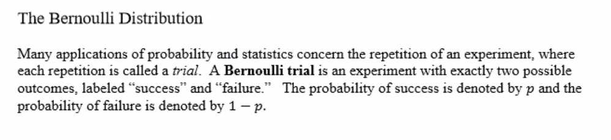
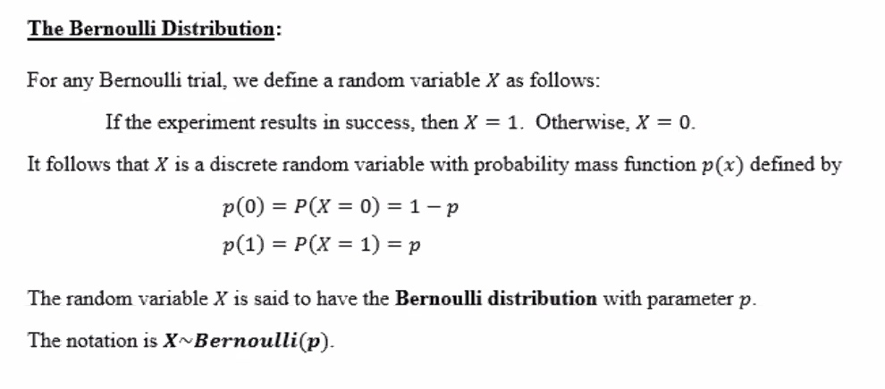
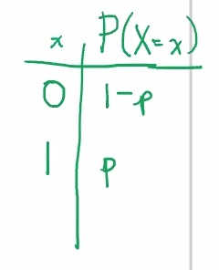
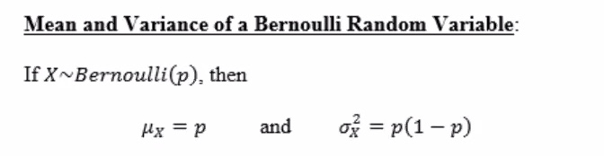
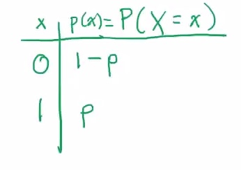
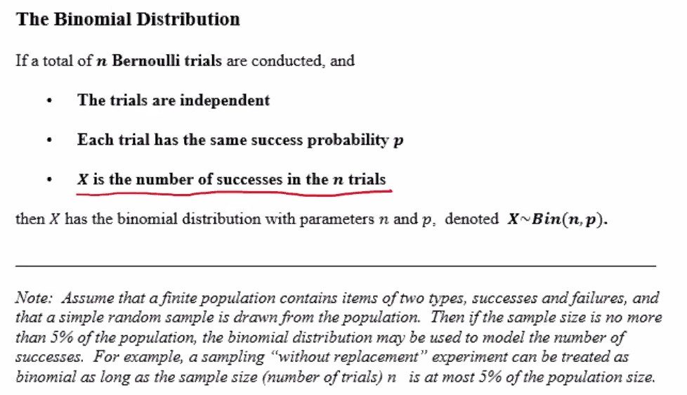
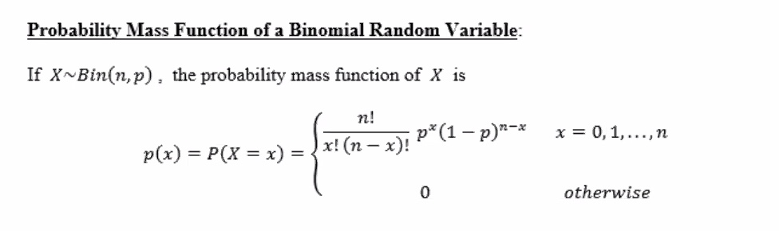
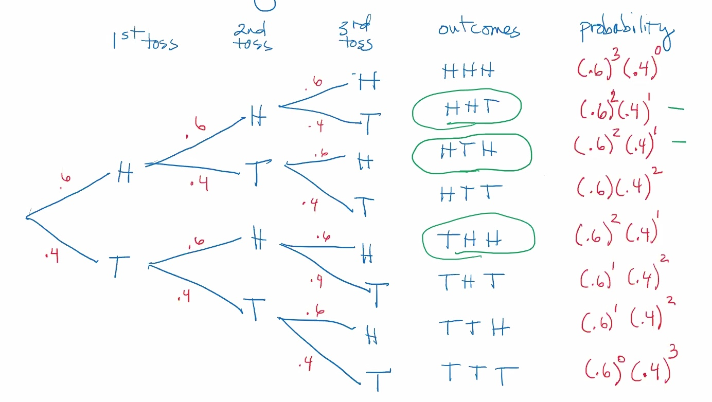
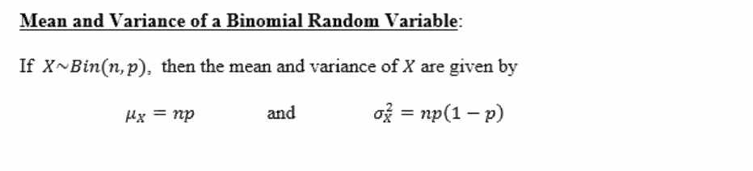

4.1 The Bernoulli Distribution
Stat50 4.1 The Bernoulli Distribution.pdf

For example, the tossing of a coin is a simple Bernoulli trial. There are 2 possible outcomes, heads or tails. We can define a heads as "success". With a fair coin, the probability of success is p=0.5.


So using our coin example from above:
Let X=1 if the coin comes up heads. Let X=0 otherwise. Then X has a Bernoulli distribution with p=0.5. So:
X~Bernoulli(0.5)
e.g.
Ten percent of the components manufactured by a certain process are defective. A component is chosen at random. Let X=1 if the component is defective and X=0 otherwise. What is the distribution of X?
The success probability is:
p(1)=P(X=1)=0.1
X has a Bernoulli distribution with parameter p=0.1. That is,
X~Bernoulli(0.1)


The mean:
μx=∑xxp(x)=0(1−p)+1(p)=p
The variance:
σ2x=∑x(x−μ)2⋅p(x)=(0−p)2(1−p)+(1−p)2(p)=p2(1−p)+(1−p)2(p)=p(1−p)[p+(1−p)]=p(1−p)
Back to our example:
μxσ2x=0.1=0.1(0.9)=.09
4.2 Binomial Distribution
Stat50 4.2 The Binomial Distribution.pdf


Recall:
(nx)=n!x!(n−x)!=nCx
e.g.
Suppose a biased coin has a probability of 0.6 of coming up heads. The coin is tossed three times. Let X= number of heads in 3 tosses. Lets make sure this is a binomail distribution:
- n = 3 Bernoulli trialgs (coin tossed 3 times 2 possible outcomes H or T)
- The trials are independent.
- p=0.6, probability of success is probability coin comes up heads and this stays the same from trial to trial.
So X has a binomial distribution with parameters n=3 and p=0. That is,
X~Bin(3,0.6)
Lets find the probability that exactly 2 of the 3 tosses come up heads:
P(X=x)={n!3!(3−x)!(0.6)x(0.4)3−x0x=0,⋯,notherwise
So the probability of exactly 2 heads:
P(X=2)=3!2!1!(0.6)2(0.4)1=0.432
Background:

P(X=2)=3(0.6)2(0.4)1=(32)⏟how many outcomes have exactly 2 heads⋅(0.6)2(0.4)1prob. of an individual outcome with 2 heads
